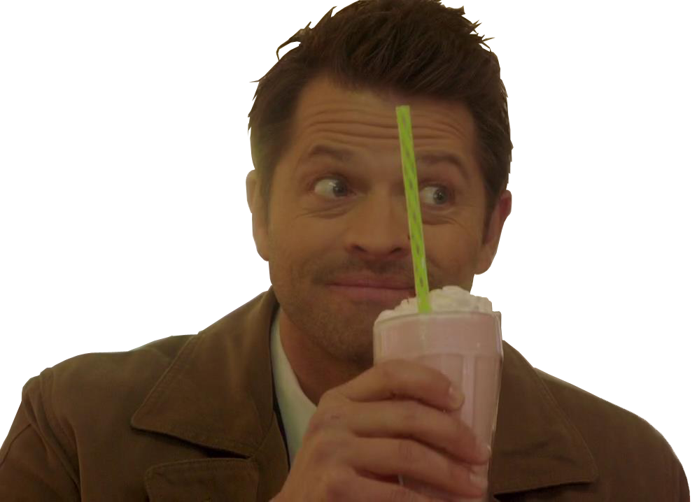

Castiel
Biographie
Castiel est un ange envoyé par le Paradis. Dieu lui a ordonné de faire sortir Dean Winchester de l'Enfer et de lui confier une mission pour accomplir sa destinée. Il parviendra à faire sortir Dean de l'Enfer après que celui-ci y aura passé 4 mois (En temps humain, mais 40 ans en Enfer) à y être torturé. Grâce à lui, on apprend l'existence des anges. Il occupait un poste au Ciel depuis plusieurs millénaires, dans une garnison qui consistait à surveiller les mouvements humains.
Dans le premier épisode de la saison 4, Dean revient de l'Enfer et va essayer de trouver qui l'en a fait sortir.
Pour cela, il va faire appel à une médium du nom de Pamela Barnes (qui est une connaissance de Bobby Singer) qui va découvrir que c'est une créature nommée Castiel et va tenter de le faire apparaître. Malgré les mises en garde de Castiel, Pamela tente de le faire apparaître. Mais Castiel lui brûle les yeux, car sa véritable apparence (d'ange) est insupportable à la vue d'un humain tout comme sa voix assourdissante dont Dean a été victime. Suite à cela, Dean va tenter avec Bobby de l'invoquer et il apparaîtra devant eux ayant pris possession d'un corps humain. Castiel apprend à Dean que c'est Dieu qui lui a ordonné de le faire sortir de l'Enfer car celui-ci aurait une mission à lui confier. Dans les premiers épisodes de la saison, Castiel est distant et froid, mais va peu à peu développer une certaine affection envers Dean. Il se mettra souvent de son côté et le mettra en garde contre les pouvoirs inquiétants de son frère Sam. Il aide Dean, même indirectement et en lui donnant des indices quand celui-ci ne sait pas quoi faire. Castiel est sur Terre pour empêcher la destruction des 66 sceaux par Lilith qui provoquerait le réveil de Lucifer. Castiel est extrêmement dévoué à Dieu et obéit au moindre de ses ordres. Mais petit à petit, il va se poser des questions sur les véritable intentions des anges, en particulier quand Uriel (ange allié de Castiel faisant partie de son unité) tue tous les anges de leur unité car ceux-là avaient refusés de s'allier à lui pour réveiller Lucifer. Dans le dernier épisode de la saison, Castiel révèle à Dean que Lilith est le dernier sceau et que si elle meurt, Lucifer se réveillera.
- Saison 4
La première saison nous plonge dans l'univers surnaturel des frères Winchester, qui refont équipe après plusieurs années, pour retrouver leur père. Après la mort de Mary, leur mère, John Winchester devient chasseur pour retrouver le démon qui l'a tuée et ainsi venger sa mort. Il entraîne avec lui ses deux fils, Dean et Sam, qui seront élevés comme des soldats et grandiront dans cet univers. La saison commence vingt-deux ans après la mort de leur mère ; John disparaît et Dean décide d'aller retrouver Sam pour l'aider à rechercher leur père. Tout au long de la saison, ils sont à sa recherche en combattant des esprits, des polymorphes et d'autres monstres. Mis à part la recherche de leur père, l'histoire et la mise en scène de chaque épisode les présentaient comme un nouveau film d'horreur à chaque fois.
pouvoirs
Pouvoirs et capacités :
- Super force : Castiel, étant un être supérieur aux démons possède une force et une endurance bien plus grande que les démons.
- Exorcisme / Purification : D'un simple toucher sur les démons Castiel peut tuer ces derniers en les purifiant.
- Télékinésie : Castiel (comme tous ses frères et sœurs angéliques) est capable de déplacer les objets ou alors des personnes par la pensée.
- Possession angélique : Les anges ont besoin d'un vaisseau humain pour interagir avec les personnes.
- Intelligence : Castiel est très intelligent et a une grande connaissance des choses.
- Guérison : Castiel possède la faculté de se régénérer très rapidement de ses blessures, sauf s'il s'agit de blessures infligées par ses semblables qui mettent beaucoup plus longtemps à guérir. Il peut aussi le faire pour soigner d'autres personnes.
- Télépathie : Castiel peut lire dans les esprits et pensées.
- Résurrection : Après avoir été ramené par Dieu à la vie, Castiel a démontré la faculté de pouvoir ressusciter Bobby.
Capacités perdues à cause de la chute
- Téléportation : Castiel pouvait disparaître et réapparaître où bon lui semblait sur Terre et quand il le voulait.
- Invisibilité : Castiel pouvait décider à n'importe quel moment de ne plus se montrer, il le fait par exemple à la fin de lasaison 6 en écoutant les conversations de Dean, Sam et Bobby.
- Perte de ses pouvoirs divins
- Combustion moléculaire : Castiel a utilisé ce pouvoir pour tuer Raphael (son frère aîné).